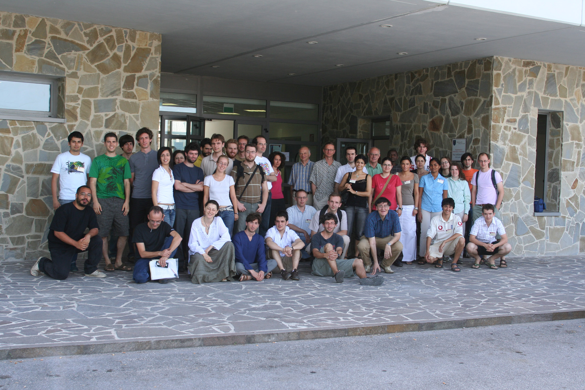

Elías Baro González
Fotos
- [MODNET] Training Workshop, Humboldt-Universität Berlin (Germany), 10 September - 14 September 2007

- [MODNET] Camerino Summer school, Camerino (Italy), 18 June - 23 June 2007

- [MODNET] O-minimality: Model Theory and Geometry, University of Haifa (Israel), 01 September - 04 September 2008
- Logic Colloquium 2009, Sofia (Bulgaria), 31 July - 05 August 2009
- Model Theory, Będlewo (Poland), 9 August - 14 August 2009

- British Postgraduate Model Theory Conference (Leeds), 19-21 January 2011
- Recent Developments in Model Theory (Oléron), June 5-11, 2011
- Logic Colloquium 2012, Manchester (UK), July 12-18, 2012